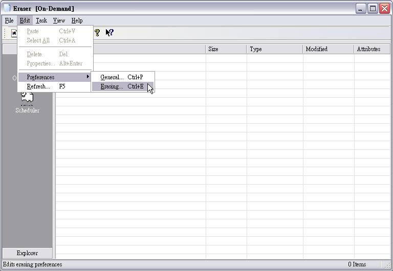
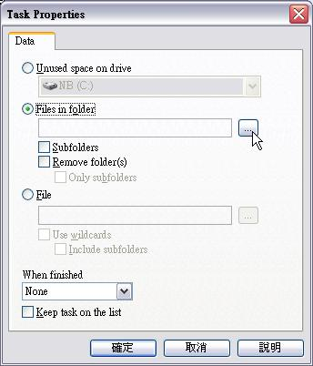

把檔案抹除乾淨的Eraser （上）

在 Windows 底下，千萬不要以為執行清理資源回收筒或刪除檔案的同時按住 Shift，就可以讓檔案完全從電腦中消失。要是徹底清除檔案是這麼容易的一件事，那麼救援軟體就沒有存在的價值了。
當然，要刪除的檔案，不見得都很重要，如果要刪除的只是一些無關痛癢的檔案，當然就不需要使用 Eraser 這一類的安全軟體，若檔案的內容牽涉到個人隱私、個人與企業的機密、網頁瀏覽紀錄、網路服務使用紀錄…等等，那麼還是要小心一點的好，以免洩漏出去後，為自己惹來無窮盡的麻煩。
因此，送修電腦、丟棄硬碟、遺失了隨身碟等，不希望洩漏了不該洩漏的祕密，那麼平常最好養成徹底抹除重要資料的習慣，此時此刻，Eraser 絕對會是一個必備的工具。因為 Eraser 不但提供有效的方法可以徹底抹除檔案，連相關的緩衝區（Buffer），都會一併抹除，絕對不留下任何「殘黨餘孽」！
除了個人使用者之外，公司內需要管理隨身碟的單位（通常是 MIS 人員），也應該要使用這東西。尤其是在把隨身碟發給新進人員使用之前，就應該用 Eraser 把隨身碟清理乾淨，以免殘存的資料有外洩之疑。
只是在使用之前，有幾點要先提醒大家：
1. 抹除前，請先確定資料還要不要
Eraser 提供的抹除方法，只有少數幾種可以透過軟、硬體方式救回資料，所以抹除前一定要先確定檔案真的不要了，否則抹除後要後悔，不論怎麼哭爹喊娘外加搥心肝，都是沒有用的。
2. 根據需要及電腦運算能力選擇合適的抹除方式
使用 Eraser 時，部份所提供的抹除方式相當耗費系統資源，有可能讓電腦的效能降低到幾乎無法做其他的事。若硬體的效能不高，卻又用這些方式來抹除大又多的檔案或整個硬碟時，那不止是不能做其他而已，很可能得要空出很長一段時間才行（現在單一硬碟的容量隨便都超過 160 GB，跑個幾小時是很正常的），因此選用和執行前，一定要先做好必要的評估（真的有空閒讓電腦進行抹除任務等），否則耽誤正事就不好啦！
3. 例行性抹除請善用排程功能
如果有些資料具有時效性，如企業內某些只需要一定壽命的文件檔案，時間到了就該徹底「處理」掉，或者瀏覽器的快取資料等，這時候就可以利用排程功能，搭配特定的資料夾，在閒暇時間（午休、夜間或週末）進行抹除作業，如此才不會忘記要「做掉」這些檔案，也才不會浪費可做事的寶貴時間。
好啦！了解這些事情之後，就一起來看看這個能把機密檔案吃乾抹淨的寶貝吧！
下載
◎ 使用前的必備基礎
Eraser 所提供的抹除方式主要有五種（用於磁碟未使用空間的抹除則只有四種），所以使用前應該要根據自己的需要，先設定好想要採用的抹除方式，才能在抹除效果和效能之間取得適當的平衡。現在先來看看 Eraser 所提供的抹除方式有什麼特色吧！
1. Gutmann：這是根據 Peter Gutmann 的研究報告「Secure Deletion of Data from Magnetic and Solid-State Memory」所發展出來的方法，也是最安全的方法，採用此法抹除後，不論是採用軟、硬體的救援方式，都無法讓資料復原。不過，它執行的速度非常慢，尤其用此法來抹除硬碟的時候。（速度的快慢，和硬體也有關）
2. US DoD 5220-22.M：從美國國防部於 1995 年元月提出的安全建議中，所發展出來的方法。它所執行的速度比 Gutmann 快一些，不過安全性略差，可用硬體的方式讓資料復原。只是這種方法通常很昂貴，Attila 認為，除非資料價值連城，重要到讓人不惜血本也得救回來，否則採用此法的安全性就已經太足夠了。
3. Pseudorandom Data：此法是由 Eraser 以亂數產生的假資料來進行覆寫，覆寫的次數最高可達 65,535 次。它的執行速度很快，是 Eraser 所預設的方法。當然，安全性和複寫的次數有關，多了自然比較安全，但電腦的執行效率也相對會變低。
4. Only first and last 2KB：只覆寫檔案前後 2KB 的資料。此法速度當然快，但安全性相對也低。此法在 Eraser 內只能用於抹除檔案，抹除磁碟時不提供此法。
5. Schneier’s 7 pass：依據 Bruce Schneier 的演算法所發展出來的，採用特定的密碼形式來產生假資料，然後以亂數的方式來覆寫資料。安全性相當高，速度則和 US DoD 5220-22.M 差不多。
一般來說，個人使用只需要使用 Pseudorandom Data 即可，次數則可按照電腦的運算能力設定在 3-7 次。如果需要高一點的安全性，則可選擇其他安全性更高的方法（如 Gutmann、US DoD 5220-22.M 等）。
若抹除的是磁碟，那麼這些方法中，只有 Pseudorandom Data 可用於壓縮磁碟（如使用 Drive Space 這類軟體，針對整個磁碟壓縮以增加儲存空間，不是針對個別的檔案壓縮），其他的方法都可能產生問題，這是必須要注意的地方。
至於要怎麼設定呢？現在就來看看吧！
步驟一

開啟 Eraser 後，按功能表的 Edit（編輯）＼Preferences（偏好）＼Erasing（抹除）。
步驟二
出現的視窗有二個標籤，畫面中顯示的是抹除檔案時可用的抹除方式，新的版本以 Pseudorandom Data 為預設值。如果要改變它的次數，點選 Pseudorandom Data 後，按一下又邊的 Edit鈕。
至於底下 Overwrite 的三個選項，則表示要複寫哪些部份，覆寫的範圍越廣，資料被救回來的可能性當然越低，通常只要使用預設值就可以了。
步驟三
此時會出現設定的視窗，根據自己的需要輸入想要的次數即可。修改完畢後按一下 OK。
步驟四
點選 Unused Disk Space 標籤，這裡就可以設定針對磁碟抹除的設定。大家或許會發現，這裡講的只是抹除磁碟未使用的空間，如果要抹除整個磁碟呢？別急，後面的教學 Attila 會講的啦！
設定好抹除方式，以後只要針對檔案、資料夾或磁碟直接進行抹除的操作就好。接下來，當然就是要來看看怎麼進行抹除作業了！
開啟 Eraser 之後，大家應該會發現左邊的欄位有三個項目，分別是 On-Demand、Scheduler 和 Explorer，On-Demand 是當下立刻執行抹除，Scheduler 是排程抹除，Explorer 則是以 Shell Extension 的方式，可在 Eraser 內使用 Windows 的檔案總管，方便直接把檔案直接找出來進行抹除，不必另外開啟檔案總管。
這三者的用法各有其時機點，也各有其基本的使用方式，底下我們就開始一個個來說明吧！
抹除資料的基本功 1：On-Demand
步驟一
開起 Eraser 後，可以在標題列上看到目前使用的是那一項功能，通常一進來就是 On-Demand。接著，按一下工具列上的 New Task（新任務）。
步驟二

此時會出現 Task Properties（任務屬性）選單，可選擇要抹除的是磁碟、資料夾或檔案，這裡的範例是點選 Files in folder（資料夾中的檔案），也就是要把整個資料夾內的檔案全數抹除。按一下右邊的按鈕，就可以選擇要抹除的資料夾。
步驟三
選擇資料夾的視窗和檔案總管差不多，在此選擇想要抹除的資料夾後，按一下 OK。
步驟四
如果這個資料夾想要一併抹除，可以在 Files in folder 下方勾選 Remove folder(s)（移除資料夾），若只是要移除該資料夾中的子資料夾，保留母資料夾，那可以再勾選 Only subfolders（只有子資料夾）。
勾選完畢後，按一下「確定」。
步驟五
此時右邊欄位的清單內就會出現新加入的任務。在上面按一下滑鼠右鍵，從快顯功能表中點選 Run（執行）。當然，大家不一定要用快顯功能表，也可以點選任務之後，再按工具列上的 Run 按鈕。
〔補充說明〕
在快顯功能表中，會看到一個 Delete 的選項，它是用來刪除加入的任務，並不是用來刪除所選擇的檔案。
步驟六
此時會出現警告和確認視窗，告訴使用者一旦執行抹除任務，該檔案就無法救回來，因此一定要確定這些檔案是真的要毀掉。確定要毀掉的話，就按一下「是」。
步驟七
這時就會開始進行檔案的抹除。
步驟八
任務完畢之後，預設會出現抹除結果的報告，告知使用者這次抹除任務的相關資訊。看過之後，按Close關閉這個報告視窗。
至於要不要存檔？就看大家覺得需不需要留下紀錄囉！Attila 認為一般使用者是不需要啦！企業管理單位可能就需要，畢竟總要留紀錄，讓上級知道有在做事呀！
〔補充說明〕
增加新任務時，右邊的欄位中有許多項目，如檔名（Name）、檔案大小（Size）、類型（Type）、最後修改時間（Modified）、屬性（Attributes，這裡指的是檔案本身的屬性，如隱藏、唯讀等）等，這些項目針對的是檔案，所以選擇的若是資料夾，部份欄位會空白。
另外，On-Demand 不是一次只能執行一個任務，可以一次加入許多個，手動一次一個執行，或全部一起來（Run All）。如果加入的任務很多，加上電腦系統的運算能力沒有很強的話，可千萬不要嘗試 Run All，因為它真的是全部一起來！而且不是用批次的方式進行，雖然進行中可以取消，不過那可能要等一「小」段時間後，電腦才會有反應。
如果希望要依序執行工作，最好使用排程功能（必須搭配相關設定），以便讓電腦進行抹除任務時，還能保有一些效能，如此比較能兼顧其他工作。
抹除資料的基本功2：快顯功能表
如果已經把 Eraser 的抹除方式都設定好，還有比 On-Demand 更快速簡便的檔案抹除方式，那就是快顯功能表。只要安裝完 Eraser 之後，會自動加在相關的快顯功能表內。
另外，安裝 Eraser 後的快顯功能表還有一個好東西，就是安全搬移檔案。什麼意思呢？大家都知道，如果把硬碟的檔案搬移到外接的隨身碟上面，真正的處理過程是把檔案從硬碟複製到隨身碟，然後再把原先硬碟內的檔案刪除（更簡單的說，就是從硬碟剪下檔案，然後貼到隨身碟）。這樣子，原來的檔案就是以 Windows 內建的方法刪除而已，利用救援軟體還是可以復原的。但 Eraser 的安全搬移檔案可不同，它在最後的檔案刪除動作中，是以預設的抹除方式加以抹除，讓檔案的搬移不會留下安全漏洞！
〔以快顯功能表抹除檔案〕
步驟一
開啟 Eraser 之後，在左邊的欄位中點選 Explorer 後，就會看到和檔案總管相同的東西，只是右邊的欄位是以檔案明細的方式顯示而已（當然也無法改變顯示方式）。
接著找到想要抹除的檔案，在上面按一下滑鼠右鍵，從快顯功能表上點選 Erase。
步驟二
這時候會出現一個確認視窗，要使用者先想清楚，是否真的要抹除所選的檔案。
這個視窗的內容，和 On-Demand 的有些不同，左邊還多了一個 Option（選項）的按鈕。按了 Option 後，就會開啟一開始我們談過的抹除偏好設定視窗，讓我們選擇這次任務需要的抹除方式。
〔補充說明〕
其實，我們只要開啟檔案總管，一樣可以使用快顯功能表的 Erase 功能，不一定要使用 Eraser 內的 Explorer。
〔安全移動檔案〕
步驟一
和前面一樣，開啟 Eraser 的 Explorer 或檔案總管，在想移動的檔案上按滑鼠右鍵，點選Eraser Secure Move（Eraser 安全搬移）。
步驟二
選擇目的地磁碟或資料夾後，按一下確定。
步驟三
此時會出現確認視窗，按一下 Yes，就會先把檔案複製到目的地，然後對原來的檔案加以抹除，完成後一樣會出現結果報告。
抹除資料的基本功 3：資源回收筒
如果想要更單純化自己的抹除工作，那就是把不要的檔案全丟到資源回收筒，然後利用快顯功能表直接全抹除！
不過這樣子的作法和資源回收筒的一個用意不符：迅速找回誤殺的檔案。這一點，可得請大家先想清楚，自己是否有從資源回收筒找回檔案的習慣囉！
步驟一
在資源回收筒上按一下滑鼠右鍵，在選單中可以選擇要抹除的方式，直接點選自己想用的方式即可。
步驟二
此時會出現確認的對話視窗，真要抹除資源回收筒內的檔案，按一下 Yes，就會以上一步驟所選定的方式進行抹除。
抹除資料的基本功 4：抹除未使用的磁碟空間
Eraser 對於整個磁碟的抹除，只是針對未使用的空間，並不會把現有的檔案抹除掉。為何要提供這樣的方法呢？因為以前刪除或移動檔案時，或許沒有使用有效的抹除方式，為避免這些還留在磁碟內的可被救援檔案，洩漏了重要機密，此時就有必要使用這個功能來加以防範。
問題來了，如果是要把整個硬碟抹除乾淨呢？該不會要採用 On-Demand 或 Scheduler 把現存的檔案抹除，然後再來個抹除未使用的磁碟空間吧？當然不是！我們只要用檔案總管，把檔案全部刪除掉，然後針對整個磁碟進行抹除就可以囉！
不過有一點要特別注意，如果要抹除的是系統磁碟（如 C:），最好把這顆硬碟外接到其他電腦或使用開機片另行開機，以文字命令的方式來進行，否則很容易因為使用者權限、作業系統本身的保護功能而失敗。
步驟一
在 On-Demand 內，按一下工具列的 New Task，在 Unused Disk Space 的項目中，可以選擇要抹除的磁碟。在上面的圖中，大家可以看到有個 Local Hared Drives 的項目，它的意思是安裝在電腦中的硬碟，不是被分割的磁碟。以 Attila 的電腦為例，我只安裝一顆硬碟，卻分割成兩個磁碟，如果不想費心一個一個磁碟進行抹除，想要一次把整個硬碟抹除乾淨，那就可以選 Local Hared Drives。
步驟二
點選新加入的任務後，在工具列上按一下 Run 按鈕。
步驟三
一樣會出現確認是否要抹除的視窗，按一下「是」。
步驟四
這時候會開始進行抹除作業。
步驟五
抹除完畢後，一樣會出現抹除結果的報告。在上面的圖中，大家應該會發現底下的 Failures 出現了錯誤和失敗的檔案清單，這是因為 Attila 在抹除的過程中，仍舊在隨身碟存取檔案的緣故。在此是要順便告訴大家，進行磁碟抹除工作時，不要有任何程式對該磁碟進行任何的存取動作，否則就會出現部份檔案抹除失敗的現象喔！
〔補充說明〕
想要抹除磁碟，一樣可從檔案總管內進行。只要在想抹除的磁碟上按右鍵，點選 Erase Unused Space 就可以了。
（下期待續）
You may be interested in the following articles:
- 把檔案抹除乾淨的Eraser （下） - 2008-12-24